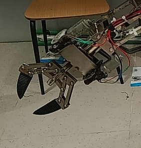

Hypersonic’s 6-DOF manipulator operates within a 1.4 m truncated spherical workspace and uses a 120° rotating base for extended reach. The arm supports three end-effectors: a precision gripper, an excavator claw for SM tasks, and an autonomous clip-on typing arm for ES missions. The typing system uses machine-vision calibration to detect reference markers on the keyboard and employs inverse kinematics to execute key presses with millimeter-level accuracy. This adaptability allows a single arm to handle soil excavation, typing, switch manipulation, and secure gripping in diverse mission scenarios.
Motivation & Constraints:
The goal was to design a multifunctional arm capable of executing tasks that previously required separate manipulators. This matters because rover missions must remain lightweight while performing highly dexterous operations. The project was constrained by strict mass limits, a requirement for sub-centimeter accuracy, and limited computation time for onboard IK solving.
Results & Evaluation
Typing accuracy exceeded 95% across repeated trials, and the adaptive gripper improved object retention by ~18%. Tool-change time decreased from 8 minutes to 3 minutes with the clip-on system. However, the excavator claw occasionally produced excessive torque under high soil resistance, indicating room for improved joint damping.
My contributions:
Learnings:
Reflection (What didn’t work & next iteration):
The first prototype of the typing system misaligned after repeated impacts on mechanical keys. I learned to incorporate compliance into the stylus tip and implement soft-landing IK trajectories. These refinements significantly increased accuracy and reduced wear on both the arm and keyboard.
{kind=link}
{kind=link}